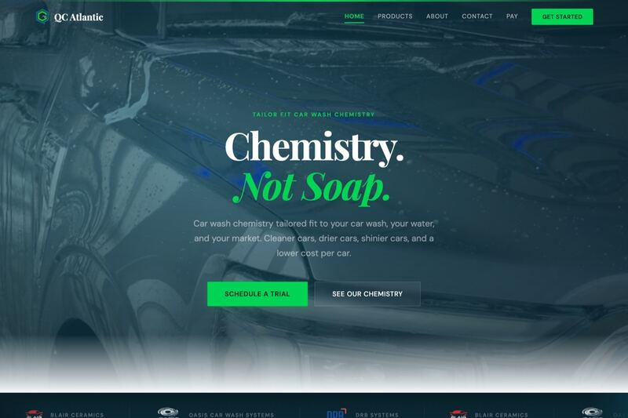

Buyer Psychology Guide
What makes a professional services website trustworthy?
For advisors, attorneys, consultants, healthcare practices, accounting firms, and other professional operators, the website has one first job: make the referral feel like contacting you is the obvious next step.
Trust is not a vibe. It is the accumulation of specific signals in the right order.
Above the Fold
The first screen should remove doubt.
A buyer should not need to scroll to understand what the firm does, who it serves, why it is credible, and how to take the next step.
Specific category
Say Fort Worth web design studio, RIA law firm, dental practice, or architecture firm. Avoid vague positioning.
Buyer fit
Make the right visitor feel named and the wrong visitor self-select out quickly.
Proof near CTA
Use reviews, client names, screenshots, credentials, or outcomes close to the action you want the buyer to take.
Trust Stack
The signals that make a serious buyer continue.
Trust-dependent firms need more than beautiful visuals. They need the page to quietly answer the risk questions already in the buyer's head.
Founder or team visibility
Real people, direct contact, bios, and relevant experience reduce the feeling of dealing with a faceless vendor.
Industry-specific language
Healthcare, financial, legal, and service-business buyers all listen for different proof.
Process clarity
Tell buyers what happens next, how long it takes, what they need to provide, and where decisions happen.
Pricing context
Transparent starting prices qualify buyers and reduce the fear that every conversation becomes a trap.
Ownership and risk
Explain who owns the code, whether there is a retainer, what happens after launch, and how support works.
Mobile credibility
Most buyers check the site on a phone. Text, proof, tap targets, and forms need to feel polished there first.
Applied to TMN
That is why Request a Free Preview matters.
The preview offer lets a cautious buyer see judgment before committing. It reduces risk, starts the conversation with value, and makes TMN different from generic agencies selling vague discovery calls.

Want a more trustworthy first impression?
Send your current website. We will review it and send back a custom preview of what a sharper site could look like.